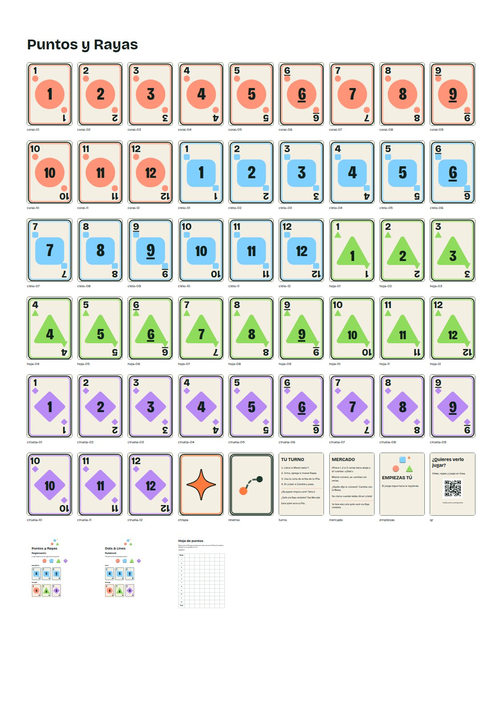

Qué trae
- En casa (carpeta
casa/): 12 hojas con 9 cartas cada una, tamaño carta o A4, al tamaño real; una hoja de reversos; el reglamento en 4 hojas carta; la hoja de puntos. - En imprenta (carpeta
imprenta/): pliegos de 33 × 48 cm con rebase y marcas de corte, la nota para la imprenta y cada pieza suelta. - Un juego: 96 cartas numeradas, 4 Chispas y una de repuesto, 4 tarjetas de turno, Mercado, «Empiezas tú» y la tarjeta QR. Para 5 a 8 personas, imprime dos.
- El reglamento es un cuadernillo de 16 páginas: en español de un lado y en inglés del otro.
Imprime las cartas al 100 % (sin «ajustar a la página»), de preferencia en cartulina, y córtalas por las marcas. El archivo LEEME-README.txt explica cada paso.
What's inside
- At home (folder
casa/): 12 pages of 9 cards each, US letter or A4, at real size; a page of card backs; the rulebook on 4 letter sheets; the score sheet. - At a print shop (folder
imprenta/): 33 × 48 cm press sheets with bleed and crop marks, the printer's note (in Spanish) and every piece on its own. - One set: 96 numbered cards, 4 Sparks plus a spare, 4 turn cards, Market, "You start" and the QR card. For 5 to 8 players, print two.
- The rulebook is a 16-page booklet: Spanish from one side, English from the other.
Print the cards at 100% (no "fit to page"), on card stock if you can, and cut on the marks. LEEME-README.txt explains each step.

Versiones
Cada versión se queda aquí para siempre.
- v1 · 17 oct 2026 · Primera versión publicada: reverso claro (menos tinta), reglamento en español e inglés, ejemplos con cartas, hojas para casa (carta y A4) y pliegos de imprenta.
Licencia
Puedes imprimirlo, compartirlo y adaptarlo gratis: da crédito («Puntos y Rayas, Luki Web Co., hallucatrix.com»), no lo vendas y comparte tus cambios con la misma licencia (CC BY-NC-SA 4.0). Arte de las cartas: CC0. Tipografías: SIL Open Font License.
Versions
Every version stays here for good.
- v1 · 17 Oct 2026 · First published version: light card back (less ink), Spanish and English rulebook, examples with cards, home sheets (letter and A4) and print-shop sheets.
Licence
Print it, share it and adapt it for free: give credit ("Dots & Lines, Luki Web Co., hallucatrix.com"), don't sell it, and share your changes under the same licence (CC BY-NC-SA 4.0). Card art: CC0. Fonts: SIL Open Font License.